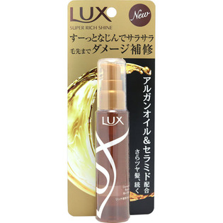

返回列表
产品名称：ラックス スーパーリッチシャイン ダメージリペア リッチ補修オイル

ユニリーバ・ジャパン ラックス スーパーリッチシャイン ダメージリペア リッチ補修オイル ５５ｍｌ
メーカー ユニリーバ・ジャパン
JANコード 4902111733401
商品の特徴
極上の輝き
すばやく浸透、ベタつかない
傷んだ髪に
- 成分・分量
- シクロペンタシロキサン、ジメチコン、アルガニアスピノサ核油、イソ酪酸酢酸スクロース、加水分解ヒアルロン酸、ヒアルロン酸ヒドロキシプロピルトリモニウム、スクワラン、酢酸トコフェロール、ミネラルオイル、オレイン酸、メトキシケイヒ酸エチルヘキシル、アモジメチコン、フェニルトリメチコン、PEG/PPG-19/19ジメチコン、トリ(カプリル酸/カプリン酸)グリセリル、水、香料
- 用法及び用量
- 乾いた髪やタオルドライした髪に、2～3プッシュずつを手のひらで伸ばしながらあたためて、毛先を中心に髪の長さの半分くらいまでなじませることで、ドライヤーの熱などにより傷んだ、髪のキューティクルを整えます。（適量：セミロングで4～6プッシュ）